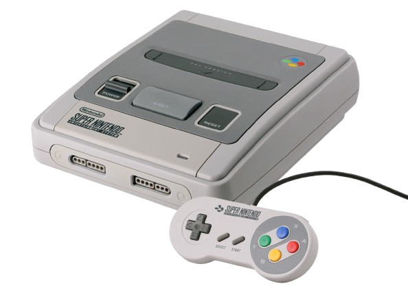
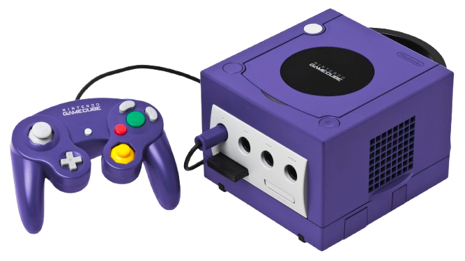
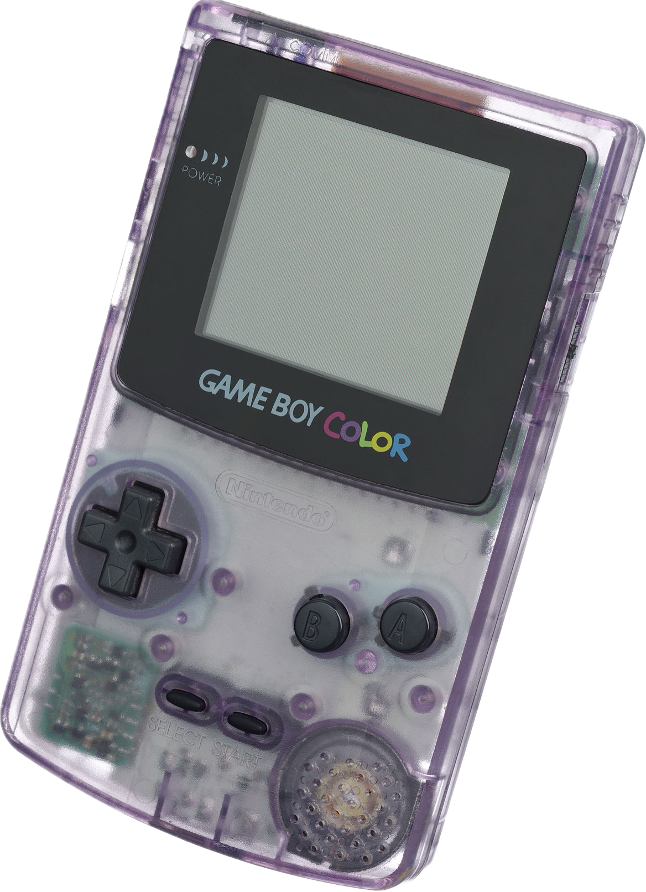
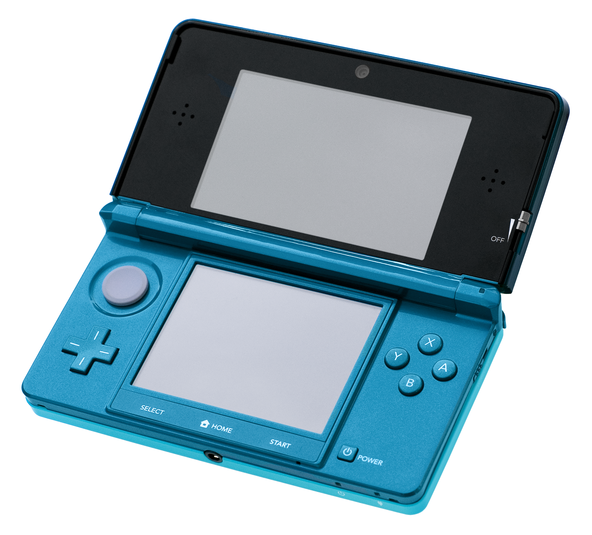

The Nintendo Entertainment System (NES), designed by Masayuki Uemura, launched in the mid-1980s as an affordable home console capable of running arcade-style games on cartridges. It featured a gamepad based on Nintendo’s Game & Watch and included accessories like the NES Zapper and R.O.B. robot. The NES helped revive the video game industry after the 1983 crash and introduced the model of licensing third-party developers. Selling over 61 million units, it became a global success and was succeeded by the Super Nintendo in 1990.
Iconic NES games include Super Mario Bros., The Legend of Zelda, Metroid, and Mega Man. These titles laid the foundation for some of gaming’s most beloved franchises and remain influential to this day.

Super Nintendo Entertainment System (SNES)
The Super Nintendo Entertainment System (SNES) was Nintendo’s second home console, offering improved graphics and sound over its predecessor. Launched amid stiff competition from the Sega Genesis, it eventually became the best-selling 16-bit console with 49.1 million units sold. It supported enhancement chips in cartridges to extend its technical lifespan and remained popular through the early 2000s. The SNES still enjoys a strong legacy through retro collecting, emulation, and re-releases like the SNES Classic Edition.
Popular SNES games include Super Mario World, The Legend of Zelda: A Link to the Past, Super Metroid, Donkey Kong Country, and Chrono Trigger—many of which are still praised for their gameplay and influence.
Nintendo 64
The Nintendo 64, launched in 1996, featured a unique three-pronged controller, cartridge-based games, and optional accessories like the Expansion Pak and Controller Pak. It also supported the 64DD magnetic disk add-on, though it flopped commercially and remained Japan-exclusive. Despite innovative features, the N64 struggled globally against the PlayStation, selling over 32 million units before being discontinued in 2002.
Popular N64 titles include Super Mario 64, The Legend of Zelda: Ocarina of Time, GoldenEye 007, Mario Kart 64, and Super Smash Bros., many of which became genre-defining classics.

GameCube
The Nintendo GameCube, released in 2001, was Nintendo’s first console to use optical discs instead of cartridges. It emphasized gaming over multimedia, lacking DVD playback but supporting memory cards, Game Boy Advance connectivity, and add-ons like the Game Boy Player. Despite its compact design and strong first-party titles, the GameCube faced tough competition and limited third-party support, selling 21.74 million units before its discontinuation in 2007.
Popular GameCube titles include Super Smash Bros. Melee, Super Mario Sunshine, Metroid Prime, Mario Kart: Double Dash, and The Legend of Zelda: The Wind Waker, many of which became enduring Nintendo franchises.
Wii
The Nintendo Wii, launched in 2006, prioritized innovative motion controls over raw power, using the Wii Remote to attract casual and nontraditional gamers. It featured online connectivity, digital downloads via the Wii Shop Channel, and early models were backward-compatible with GameCube games. Affordable variants like the Wii Mini later dropped features to cut costs. Selling over 101 million units, it became Nintendo’s best-selling home console until surpassed by the Switch.
Popular Wii titles include Wii Sports, Super Mario Galaxy, The Legend of Zelda: Twilight Princess, Mario Kart Wii, and Super Smash Bros. Brawl, many of which became top-selling hits of their generation.
Wii U
The Wii U, released in 2012, was Nintendo’s first HD console and featured the GamePad controller with a built-in touchscreen for dual-screen gameplay. It supported various control schemes, was backward compatible with Wii games and accessories, and introduced online features through the Nintendo Network and Miiverse. Despite its innovation, the console struggled with poor marketing, weak third-party support, and low sales, leading to its discontinuation in 2017 after selling 13.56 million units.
Popular Wii U titles include Mario Kart 8, Super Mario 3D World, Splatoon, Super Smash Bros. for Wii U, and The Legend of Zelda: Breath of the Wild, many of which were later re-released on the more successful Nintendo Switch.
Nintendo Switch
The Nintendo Switch, launched in 2017, is a hybrid console that functions as both a home and portable system. Its detachable Joy-Con controllers support multiple play styles with motion controls and haptic feedback. Games are distributed via cartridges or the Nintendo eShop, and the system supports local and online multiplayer. Hardware revisions include the handheld-only Switch Lite and the OLED model. The console became a major success, selling over 150 million units by late 2024.
Popular Switch games include The Legend of Zelda: Breath of the Wild, Animal Crossing: New Horizons, Super Mario Odyssey, Mario Kart 8 Deluxe, and Super Smash Bros. Ultimate.
Nintendo Switch 2
The Nintendo Switch 2, announced in 2025, will continue to support both physical Game-Key Cards and digital downloads via the Nintendo eShop. Some games will require updates to take full advantage of the enhanced performance. It will also retain the Nintendo Switch Online service for multiplayer games and access to the Classics library, including exclusive GameCube titles under the Expansion Pack tier. New features include GameChat for remote communication and screen sharing.
Popular titles for the Switch 2 include new entries in the The Legend of Zelda and Super Mario franchises, alongside enhanced versions of beloved games. However, the higher price of the Switch 2 and its games has drawn some criticism.
Handheld
Game Boy
The Game Boy, developed by Nintendo's R&D 1 team under the leadership of Gunpei Yokoi, was launched in 1989 with a simple design featuring a dot-matrix display, D-pad, four buttons, and a speaker. It was initially released in Japan as a standalone console, but bundled with Tetris in North America and Europe, which helped propel its success. Despite competition from color-screen handheld consoles, its affordability, long battery life, and extensive game library made it a dominant force in portable gaming.
Popular Game Boy titles include Tetris, Pokémon Red/Blue, The Legend of Zelda: Link's Awakening, and Super Mario Land, all of which became iconic franchises in gaming.

Game Boy Color
The Game Boy Color, released in 1998, was a significant upgrade over the original Game Boy, featuring a color screen and a smaller, more compact design. It maintained the custom 8-bit processor from Sharp and offered backward compatibility with Game Boy games. While praised for its improved visuals and portability, the Game Boy Color was considered more of a transitional step than a revolutionary new device, with a short lifespan before being succeeded by the Game Boy Advance.
Popular games for the Game Boy Color include Pokémon Gold and Silver, The Legend of Zelda: Oracle of Ages/Seasons, and Super Mario Bros. Deluxe. Pokémon Gold and Silver became the system’s best-selling titles, with over 23 million copies sold worldwide.
Game Boy Advance
The Game Boy Advance (GBA), released in 2001, was part of the sixth generation of video game consoles, competing with devices like the Nokia N-Gage and Bandai WonderSwan. The system underwent several revisions, including the Game Boy Advance SP (2003), which featured a clamshell design and a frontlit screen, and the Game Boy Micro (2005), a miniaturized version. The GBA series, including all revisions, sold over 81 million units worldwide before being succeeded by the Nintendo DS in 2004.
Popular games for the Game Boy Advance included Pokémon Ruby and Sapphire, The Legend of Zelda: A Link to the Past & Four Swords, Metroid Fusion, and Mario Kart: Super Circuit, which helped solidify the GBA's status as a major success in handheld gaming.
Nintendo DS
The Nintendo DS was initially marketed as an experimental third pillar to complement the Game Boy and GameCube, but its backward compatibility with Game Boy Advance games and strong sales quickly made it the successor to the Game Boy series. The original DS was followed by several revisions, including the Nintendo DS Lite (2006), which offered a slimmer design, brighter screens, and improved battery life. Later, the Nintendo DSi (2008) introduced new features but lost compatibility with Game Boy Advance titles, and the Nintendo DSi XL (2009) offered a larger screen. With over 154 million units sold, the Nintendo DS became the best-selling Nintendo system, best-selling handheld, and the second best-selling console of all time. It was succeeded by the Nintendo 3DS in 2011.
The DS series saw a wide range of iconic games, including New Super Mario Bros., The Legend of Zelda: Phantom Hourglass, Mario Kart DS, Pokémon Diamond and Pearl, and Animal Crossing: Wild World, which helped solidify its place as a leader in handheld gaming.

Nintendo 3DS
The Nintendo 3DS, released in 2011, was most notable for its ability to display stereoscopic 3D images without the need for glasses or additional accessories. It also introduced features like StreetPass and SpotPass, augmented reality capabilities, and access to Virtual Console, allowing users to download games from older consoles. Despite a slow start and a significant price cut within months of launch, the 3DS became one of Nintendo's most successful handheld consoles, selling 75.94 million units by the end of 2024. The 3DS family included several variants, such as the 3DS XL, which offered a larger screen, and the 2DS, which lacked 3D functionality. The New Nintendo 3DS, released in 2014, featured improved hardware and additional controls, ensuring its continued popularity until its discontinuation in 2020.
The 3DS featured a rich library of games, including titles such as The Legend of Zelda: A Link Between Worlds, Super Mario 3D Land, Pokémon X and Y, Fire Emblem: Awakening, and Animal Crossing: New Leaf, contributing to its success and longevity.